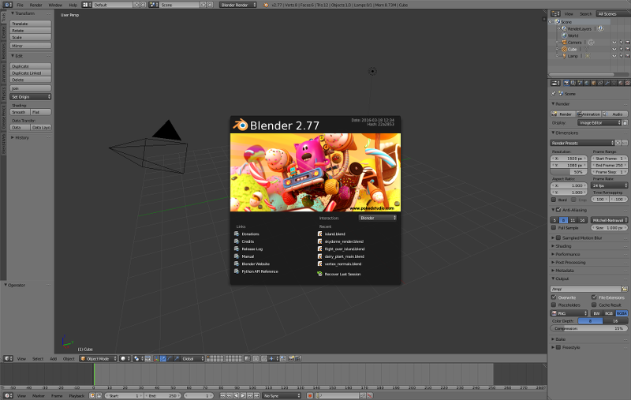

安装和更新¶
安装顺序¶
这里有的两个版本的Blend4Web框架：Blend4Web SDK和Blend4Web插件。为了确定哪一种最适合你的需求，你需要决定哪种你正在计划开发应用程序。
如果你打算使用Blend4Web引擎所提供的所有功能，您应该安装Blend4Web SDK。
如果你的目的是要开发小规模的项目，或者如果您打算只使用的Blend4Web引擎的功能的数量有限（例如法线编辑器），你可能会考虑安装 Blend4Web 插件 来代替。
注意：插件只能导出场景到 HTML格式 和有限功能 (例如，它没有 项目管理，示例场景，用户手册，其他额外资源等等)，但它仍然拥有一切让你可以创建一个简单的应用程序。
安装Blender¶
直接在 Blender 中创作 3D 场景，这是开放源码软件和免费分发软件。
安装之前，请下载并安装兼容的Blender版本，根据此 表.
应使用当前的稳定版本的Blender。它可以从 官方网站 或从 Blend4Web 网站 下载 。
安装Blend4Web SDK¶
稳定版作为压缩包发布 (blend4web_sdk_free_YY_MM.zip – 免费 SDK, blend4web_sdk_pro_YY_MM.zip – 商业 SDK). 只要在某处解开这个压缩包。
打开Blender。
打开用户首选项面板
File > User Preferences....打开
File选项卡。在
Scripts中设置 SDK 目录的路径。单击
Save User Settings按钮。重新启动Blender。
打开用户首选项面板
File > User Preferences....打开
File选项卡。启用 Blend4Web 插件。
单击
Save User Settings按钮。
验证是否工作:
在 File > Export 菜单 Blend4Web (.json) 和 Blend4Web (.html) 选项应该出现。
安装Blend4Web 插件¶

它可以和其他 Blender插件 的安装方式相同。
打开Blender。
打开用户首选项面板
File > User Preferences....打开
File选项卡。按
从文件安装...按钮。选择包含Blend4Web插件的文件，然后按
从文件安装...按钮。单击
Save User Settings按钮。重新启动Blender。
打开用户首选项面板
File > User Preferences....打开
File选项卡。在列表中找到 Blend4Web 插件。
勾选标题左侧的框以启用它.。
再按一次点击
Save User Settings按钮。
现在，一切都应该能正常工作了。

{kind=link}
{kind=link}
{kind=link}
更新¶
更新 SDK¶
在更新之前，我们建议您使用 project export 工具备份的所有开发中的项目.
要更新SDK，请按照下列步骤操作：
下载SDK的新版本。
打开Blender。
打开
用户设置窗口。打开
Add-ons面板。禁用
Blend4Web插件。注解
我们建议不要使用
Remove按钮禁用插件来更新SDK，因为这样做会彻底删除插件，包括它的SDK文件。解压新版本SDK。
注解
有两种方法来更新 SDK。
首先，可以完全删除 SDK 文件夹中，在那之后，提取新版本文件夹并将路径设置为它在Blender设置，就像你第一次安装 SDK一样。
第二，你可以简单地使用新的覆盖过时的 SDK 文件。此方法被认为是不太 “纯净”，但在大多数情况下，它不应导致任何问题。
在
用户设置窗口中打开File面板。设置
Scripts表格的路径SDK文件夹。单击
Save User Settings按钮。重新启动Blender。
再次打开
用户设置窗口。打开
Add-ons面板。启用
Blend4Web插件。再按一次点击
Save User Settings按钮。检查一切正常。
完成更新后，您可以使用 项目导入 工具导入所有已保存的项目。
更新插件¶
如果你只使用Blend4Web插件，按照下面使用说明来做。
安装新版本的插件之前，您可以先删除现有之一。要做到这一点，展开Blend4Web插件的信息选项卡，然后按 Remove 按钮。删除旧版本安装新的不是必需的，但这样做可以确保不会有任何版本冲突。

下载包含新版本插件的文件，并将其保存到硬盘上的任何地方。
打开Blender。
打开
用户设置窗口。切换到
Add-ons面板。从你下载的存档安装新版本的插件。
单击
Save User Settings按钮。重新启动Blender。
一切都应该能正常工作了。
更新保存的项目¶
你更新你的 SDK （或插件） 后，您可以导入之前导出的项目更新回项目管理器。要执行此操作，请按照以下说明︰
打开项目管理器
导入您的项目使用
Import Project(s)按钮。使用
re-export scenes链接重新导出项目的.blend文件。对每个导入的项目使用
check modules链接来确保在程序代码中有没有缺少或未使用的模块。如果有，你可以试着使用Update Modules按钮来修复。然后使用
build命令， 生成版本使导入的项目再次工作。开发者版本的项目使用
Copy或Compile引擎绑定类型也可以构建出与新版本的 SDK一起正常工作 （与其他绑定类型的项目的开发版本没有它也可以工作）。